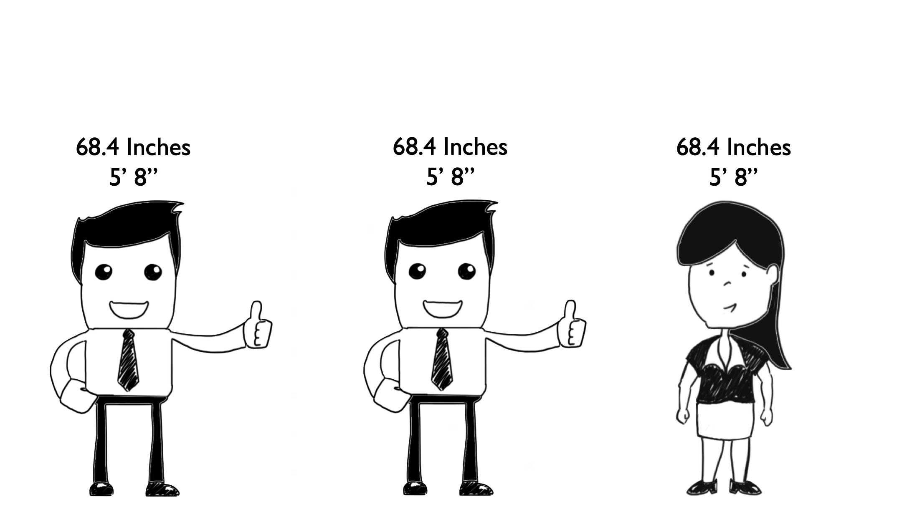
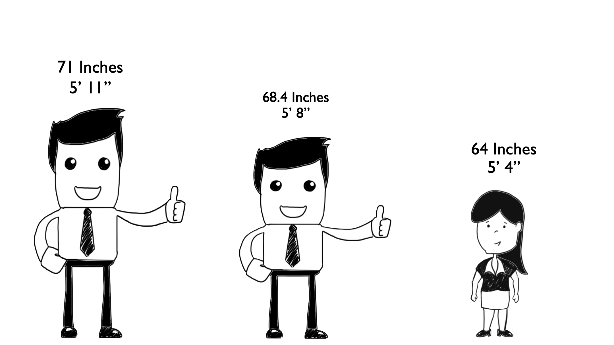
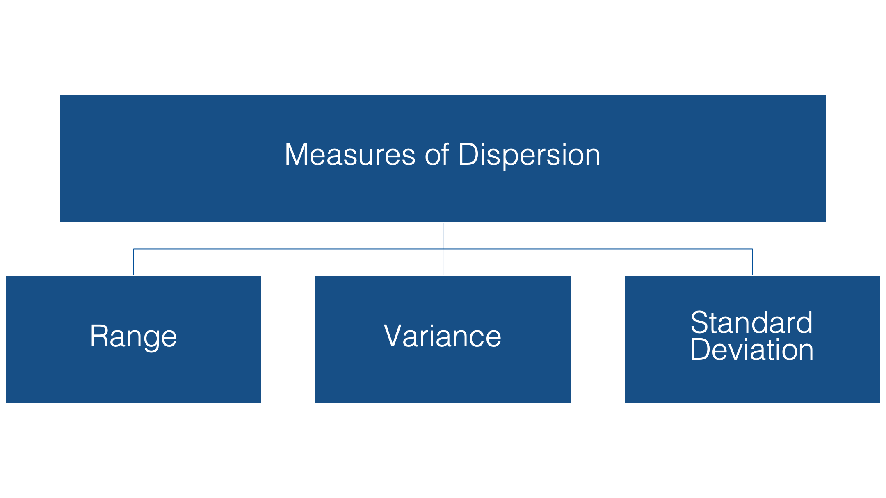
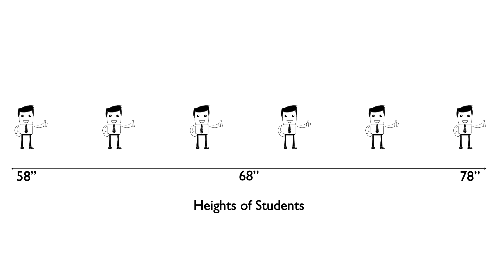
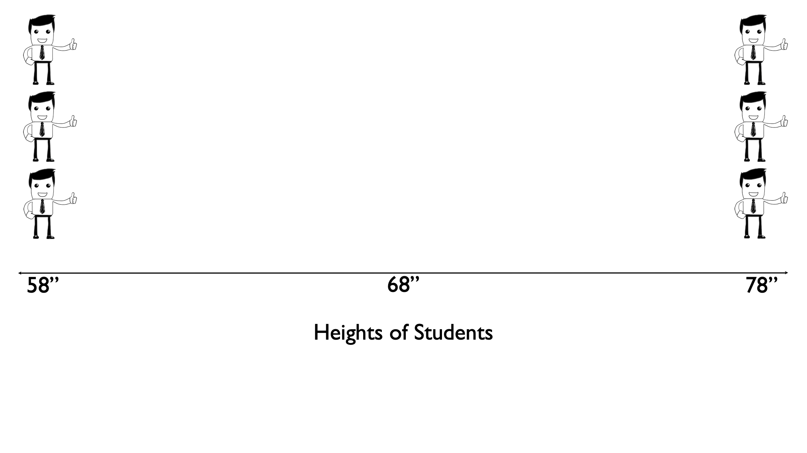
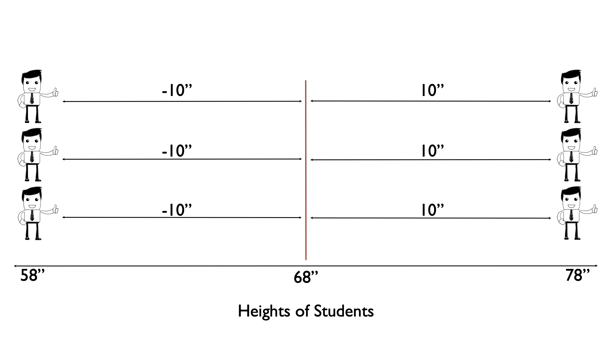
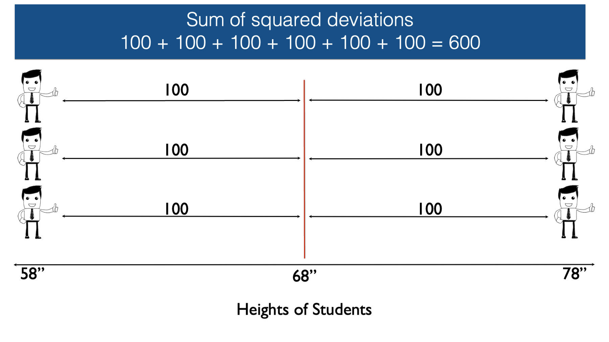
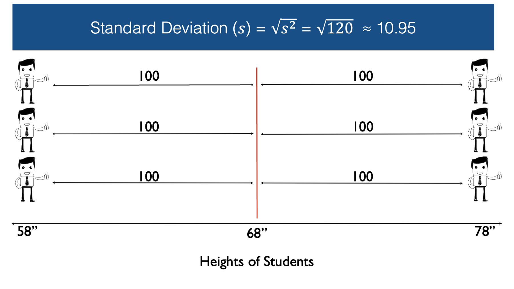

%%{init: {'theme': 'base', 'themeVariables': {'fontSize': '20px', 'fontFamily': 'Arial'}, 'flowchart': {'nodeSpacing': 16, 'rankSpacing': 45}}}%%
flowchart TB
analysis[Descriptive Analysis] --> numeric[Numerical]
analysis --> categorical[Categorical]
numeric --> continuous[Continuous]
numeric --> discrete[Discrete]
categorical --> ordinal[Ordinal]
categorical --> nominal[Nominal]
continuous --> cn[Numerical]
continuous --> cg[Graphical]
discrete --> dn[Numerical]
discrete --> dg[Graphical]
ordinal --> on[Numerical]
ordinal --> og[Graphical]
nominal --> nn[Numerical]
nominal --> ng[Graphical]
classDef emphasized fill:#4D1979,color:#ffffff,stroke:#4D1979,stroke-width:2px;
classDef muted fill:#eee8f3,color:#75677f,stroke:#d2c5df,stroke-width:1px;
class analysis,numeric,categorical emphasized;
class continuous,discrete,ordinal,nominal,cn,cg,dn,dg,on,og,nn,ng muted;
linkStyle default stroke:#b9a8c9,stroke-width:2px;
Continuous Data Summaries and Graphs
APHS 20203
Descriptive Analysis
Numerical Data
%%{init: {'theme': 'base', 'themeVariables': {'fontSize': '20px', 'fontFamily': 'Arial'}, 'flowchart': {'nodeSpacing': 16, 'rankSpacing': 45}}}%%
flowchart TB
analysis[Descriptive Analysis] --> numeric[Numerical]
analysis --> categorical[Categorical]
numeric --> continuous[Continuous]
numeric --> discrete[Discrete]
categorical --> ordinal[Ordinal]
categorical --> nominal[Nominal]
continuous --> cn[Numerical]
continuous --> cg[Graphical]
discrete --> dn[Numerical]
discrete --> dg[Graphical]
ordinal --> on[Numerical]
ordinal --> og[Graphical]
nominal --> nn[Numerical]
nominal --> ng[Graphical]
classDef emphasized fill:#4D1979,color:#ffffff,stroke:#4D1979,stroke-width:2px;
classDef muted fill:#eee8f3,color:#75677f,stroke:#d2c5df,stroke-width:1px;
class analysis,numeric,continuous,discrete emphasized;
class categorical,ordinal,nominal,cn,cg,dn,dg,on,og,nn,ng muted;
linkStyle default stroke:#b9a8c9,stroke-width:2px;
Numerical Summaries
%%{init: {'theme': 'base', 'themeVariables': {'fontSize': '20px', 'fontFamily': 'Arial'}, 'flowchart': {'nodeSpacing': 16, 'rankSpacing': 45}}}%%
flowchart TB
analysis[Descriptive Analysis] --> numeric[Numerical]
analysis --> categorical[Categorical]
numeric --> continuous[Continuous]
numeric --> discrete[Discrete]
categorical --> ordinal[Ordinal]
categorical --> nominal[Nominal]
continuous --> cn[Numerical]
continuous --> cg[Graphical]
discrete --> dn[Numerical]
discrete --> dg[Graphical]
ordinal --> on[Numerical]
ordinal --> og[Graphical]
nominal --> nn[Numerical]
nominal --> ng[Graphical]
classDef emphasized fill:#4D1979,color:#ffffff,stroke:#4D1979,stroke-width:2px;
classDef muted fill:#eee8f3,color:#75677f,stroke:#d2c5df,stroke-width:1px;
class analysis,numeric,continuous,discrete,cn,dn emphasized;
class categorical,ordinal,nominal,cg,dg,on,og,nn,ng muted;
linkStyle default stroke:#b9a8c9,stroke-width:2px;
Review: 3 Important Characteristics of Numerical Variables
- Center
- Spread
- Shape
Review: 3 Measures of Central Tendency
- Mean
- Median
- Mode
Numerical Summaries
%%{init: {'theme': 'base', 'themeVariables': {'fontSize': '20px', 'fontFamily': 'Arial'}, 'flowchart': {'nodeSpacing': 16, 'rankSpacing': 45}}}%%
flowchart TB
analysis[Descriptive Analysis] --> numeric[Numerical]
analysis --> categorical[Categorical]
numeric --> continuous[Continuous]
numeric --> discrete[Discrete]
categorical --> ordinal[Ordinal]
categorical --> nominal[Nominal]
continuous --> cn[Numerical]
continuous --> cg[Graphical]
discrete --> dn[Numerical]
discrete --> dg[Graphical]
ordinal --> on[Numerical]
ordinal --> og[Graphical]
nominal --> nn[Numerical]
nominal --> ng[Graphical]
classDef emphasized fill:#4D1979,color:#ffffff,stroke:#4D1979,stroke-width:2px;
classDef muted fill:#eee8f3,color:#75677f,stroke:#d2c5df,stroke-width:1px;
class analysis,numeric,continuous,discrete,cn,dn emphasized;
class categorical,ordinal,nominal,cg,dg,on,og,nn,ng muted;
linkStyle default stroke:#b9a8c9,stroke-width:2px;
Graphical Summaries
%%{init: {'theme': 'base', 'themeVariables': {'fontSize': '20px', 'fontFamily': 'Arial'}, 'flowchart': {'nodeSpacing': 16, 'rankSpacing': 45}}}%%
flowchart TB
analysis[Descriptive Analysis] --> numeric[Numerical]
analysis --> categorical[Categorical]
numeric --> continuous[Continuous]
numeric --> discrete[Discrete]
categorical --> ordinal[Ordinal]
categorical --> nominal[Nominal]
continuous --> cn[Numerical]
continuous --> cg[Graphical]
discrete --> dn[Numerical]
discrete --> dg[Graphical]
ordinal --> on[Numerical]
ordinal --> og[Graphical]
nominal --> nn[Numerical]
nominal --> ng[Graphical]
classDef emphasized fill:#4D1979,color:#ffffff,stroke:#4D1979,stroke-width:2px;
classDef muted fill:#eee8f3,color:#75677f,stroke:#d2c5df,stroke-width:1px;
class analysis,numeric,continuous,discrete,cg,dg emphasized;
class categorical,ordinal,nominal,cn,dn,on,og,nn,ng muted;
linkStyle default stroke:#b9a8c9,stroke-width:2px;
Review: Sleep Hours
Previous practice data: 12 fictional students’ sleep hours.
5, 5.5, 6, 6, 6.5, 6.5, 7, 7, 7.5, 8, 8, 9
- Why don’t we stop at viewing/presenting raw data?
- What type of data is this?
- What three characteristics of this type of data should we typically summarize?
- What are the two high level methods we can use to summarize this data?
Calculate the Mean in Excel
- Download sleep_and_stress.xlsx.
- Open sleep_and_stress.xlsx. Sleep hours are in B2:B13.
- Type
Mean:in cell E2.
- Type
=AVERAGE(B2:B13)in cell F2.
Calculate Measures of Central Tendency in Excel
| Slide | Excel formula | Result |
|---|---|---|
| Mean | =AVERAGE(B2:B13) |
6.83 hours |
| Median | =MEDIAN(B2:B13) |
|
| Mode |
Calculate Measures of Central Tendency in Excel
| Slide | Excel formula | Result |
|---|---|---|
| Mean | =AVERAGE(B2:B13) |
6.83 hours |
| Median | =MEDIAN(B2:B13) |
6.75 hours |
| Mode | =MODE.MULT(B2:B13) |
Calculate Measures of Central Tendency in Excel
| Slide | Excel formula | Result |
|---|---|---|
| Mean | =AVERAGE(B2:B13) |
6.83 hours |
| Median | =MEDIAN(B2:B13) |
6.75 hours |
| Mode | =MODE.MULT(B2:B13) |
6, 6.5, 7, and 8 hours |
Characteristics of Mean, Median, and Mode
| Characteristic | Mean | Median | Mode |
|---|---|---|---|
| Simple | Yes | Yes | Yes |
| Only one | Yes | Yes | No |
| Susceptible to Extremes | Yes | No | No |
| Observed in Data | Not necessarily | Not necessarily | Yes, if exists |
Measures of Dispersion
How Much Like the Average Is Everyone Else?
Mean Height = 68.4 Inches
How Much Like the Average Is Everyone Else?

How Much Like the Average Is Everyone Else?

Measures of Dispersion

Range
Range
How Much Like the Average Is Everyone Else?
B: Evenly spaced

How Much Like the Average Is Everyone Else?
C: At the extremes

Both means are 68 inches. Do B and C also have the same range? The same spread around the mean?
Same 20-inch range; C’s observations lie farther from the mean.
Distances from the Mean

The signed differences sum to zero. Does that mean there is no variation?
No. Positive and negative differences cancel.
From Squared Distances to Variance

Is 600 the sample variance?
No. square inches.
Standard Deviation Returns to the Original Units

Our sample variance is 120 square inches.
Why is SD easier to interpret than variance here?
SD uses inches, the same units as the heights.
It describes spread around the mean. Excel calculates sample SD with STDEV.S.
Check: Which Group Has the Largest SD?
| Group | Six fictional heights (inches) | Mean | Range |
|---|---|---|---|
| A | 68, 68, 68, 68, 68, 68 | 68 | 0 |
| B | 58, 62, 66, 70, 74, 78 | 68 | 20 |
| C | 58, 58, 58, 78, 78, 78 | 68 | 20 |
Rank the SDs from smallest to largest. Explain why B and C differ.
A < B < C: 0.00, 7.48, and 10.95 inches.
A has no variation. C places every observation at an extreme.
Graphical Summaries
Choose a Graph
Which graph would you use for each variable?
| Variable | Graph Type |
|---|---|
| High stress reported: yes/no | Bar graph or histogram? |
| Sleep duration in hours | Bar graph or histogram? |
- Bar graph: compare categories.
- Histogram: count observations in numerical intervals.
From a Frequency Table to a Histogram

Where does a student reporting exactly 7 hours belong?
In 7 to less than 8 hours, using these interval boundaries.
Reading Distribution Shape

Name skew by the direction of the longer tail.
Check: Which Direction Is the Skew?
Most clinic visits last 15-25 minutes, but a few last 60-90 minutes.
A. Left-skewed
B. Right-skewed
C. The long visits make the distribution symmetric
B. Right-skewed. The long visits extend the tail toward larger values.
Bin Width Changes the Picture

Did the students’ sleep change, or only how we grouped it?
Only the grouping changed. Inspect more than one sensible bin width.
Quartiles and the Middle Half
Quartiles mark positions in the ordered observations.
| Position | Meaning | Sleep hours |
|---|---|---|
| Q1 | 25th percentile | 6.00 |
| Q2 | Median; 50th percentile | 6.75 |
| Q3 | 75th percentile | 7.625 |
IQR = Q3 − Q1 = 1.625 hours.
Reading a Boxplot

- Line inside the box: median.
- Box edges: Q1 and Q3. Box width: IQR.
- Whiskers and separate points show values beyond the middle half.
Whiskers and Potential Outliers
For the boxplots in this lesson:
- Fences are Q1 − 1.5 × IQR and Q3 + 1.5 × IQR.
- Whiskers reach the most extreme observed values within the fences.
- Values beyond the fences appear as separate points.
Should we automatically delete a point beyond a whisker?
No. Check its accuracy and context before deciding what to do.
Check: Compare These Boxplots

Which group has the higher median? Larger IQR? A flagged outlier?
B: higher median and larger IQR. A: a flagged point at 35.
Z-Scores: Distance in SD Units
| Z-score | Interpretation |
|---|---|
| 0 | At the mean |
| Positive | Above the mean |
| Negative | Below the mean |
The magnitude tells us how many SDs the value is from the mean.
Check: Calculate and Interpret a Z-Score
A fictional score distribution has mean 30 and SD 5.
What is the z-score for a value of 20?
The value is 2 standard deviations below the mean.
Excel: Open the Practice Data
Open the fictional practice Excel workbook
| Column | Contents |
|---|---|
| A: student | Fictional IDs S01-S12 |
| B: sleep_hours | Yesterday’s 12 sleep values |
| C: stress_score | New fictional scores for practice |
Row 1 contains headers. Rows 2-13 contain data.
Excel: Numerical Summaries
Enter formulas in empty cells outside columns A-C.
| Summary | Formula for sleep_hours | Expected result |
|---|---|---|
| n | =COUNT(B2:B13) |
12 |
| Mean | =AVERAGE(B2:B13) |
6.83 |
| Sample SD | =STDEV.S(B2:B13) |
1.15 |
| Minimum | =MIN(B2:B13) |
5 |
| Maximum | =MAX(B2:B13) |
9 |
What would you check if COUNT returned 11?
Check the selected range, blank cells, and numbers stored as text.
Excel: Create a Histogram
- Select B1:B13, including the sleep_hours header.
- Choose Insert → Statistic Chart → Histogram.
- Add a clear title and axis titles: Sleep duration (hours) and Number of students.
- Inspect the bins. Try a 1-hour bin width and compare with the automatic grouping.
Do the plotted counts add up to 12?
Describe What You Can See
A useful histogram description addresses:
- Shape: where values cluster and which direction any tail extends.
- Spread: the observed values and units.
- Possible outliers: observations that stand apart and warrant checking.
What should you avoid claiming from this histogram alone?
A cause, a diagnosis, or a conclusion about all TCU students.
Group Exercise: Describe Stress Scores
Use stress_score in C2:C13 from the same practice file.
- Calculate n, mean, sample SD, minimum, and maximum.
- Create a histogram with a title and labeled axes.
- Write three observations about shape, spread, and possible outliers.
- Be ready to explain one number and one feature of your graph.
Work for 8 minutes. We will use 4 minutes to compare answers.
Practice Data and Graph
Stress scores, sorted:
12, 14, 15, 15, 16, 17, 18, 19, 20, 22, 25, 35
Describe the distribution in your own words.

Group Exercise: Compare Your Results
| Summary | stress_score |
|---|---|
| n | 12 |
| Mean | 19.00 points |
| Sample SD | 6.19 points |
| Minimum; maximum | 12; 35 points |
- Most scores lie between 12 and 25, with a tail toward higher scores.
- Observed scores span 23 points.
- 35 stands apart and warrants checking; it is not automatically an error.
Connection to Prep 3
For your assigned outcome, report:
- n, mean, SD, minimum, and maximum.
- A labeled histogram and observations about its shape, spread, and possible outliers.
Use your assigned project dataset, not today’s practice file.
Scatterplots come in the next lesson. Prep 3 also requires variable classifications and individual contribution statements.
Exit Check
- Which direction is the skew if the longer tail extends toward larger values?
- Does SD describe variation among observations or uncertainty in the mean?
- What part of a boxplot represents the IQR?
Right-skewed. Variation among observations. The box from Q1 to Q3.
Sources
- Brad Cannell. Measures of Central Tendency and Measures of Dispersion, Introduction to Univariate Descriptive Analysis in R. Adapted explanations and height examples.
- Yan Zhang. Statistics Overview and Descriptive Statistics, APHS 20203. Selected concepts adapted from slides 30-33 and 36-49 of the supplied PowerPoint.
- APHS 20203: Statistical Thinking and Describing Data, the approved course outline, and Group Presentation - Prep 3.
- Microsoft Support: Create a histogram and STDEV.S.
All numerical examples are fictional teaching examples.